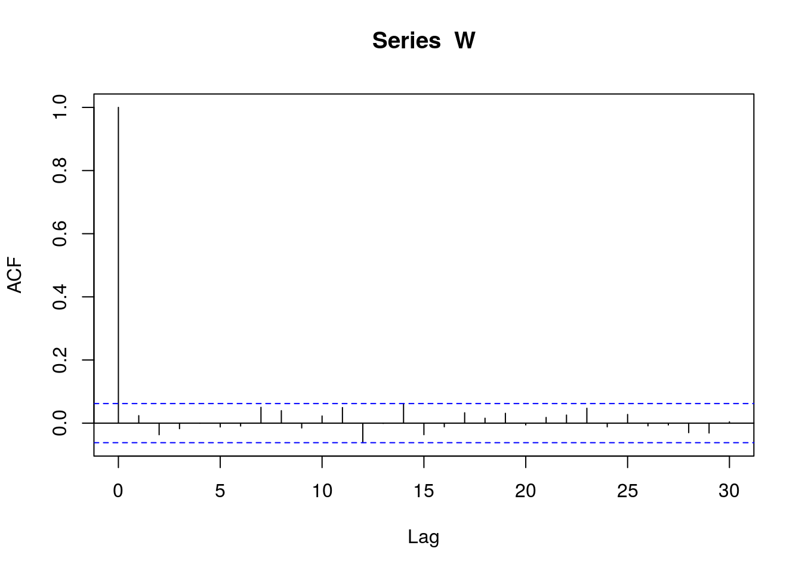

Chapter 3 Theory
We originally called these spatial moving-average models because they are analagous to moving average models in time series. They have also been called process convolution models. We review moving average models for time series to make the connection clear.
3.1 Moving Average Models for Discrete Time Series
Let \(W_i\) be a random variable at integer \(i\). A moving average is created by “smoothing,” or averaging, the \(W_i\). One approach smoothes the trailing \(\theta\) variables, or those that came earlier in time,
\[\begin{equation} Z_i = \frac{1}{\theta}\sum_{i-\theta+1}^i W_i \tag{3.1} \end{equation}\]
Let’s create some random variables from moving averages in R, using \(\theta = 5\).
# set random number seed so reproducible
set.seed(1001)
# set number of independent random variables
N = 20
# create independent random variables
W = rnorm(N)
# set length of moving average
theta = 5
# create an empty vector to hold newly created variables
Z = rep(NA, times = 20 - theta + 1)
# create moving averages
for(i in theta:N)
Z[i - theta + 1] = mean(W[(i - theta + 1):i])
par(mar = c(5,5,1,1))
plot(1:N, W, type = 'l', xlab = 'Time Sequence', cex.lab = 2,
cex.axis = 1.5, ylab = 'W and Z')
points(1:N, W, pch = 19, cex = 3)
lines(theta:N, Z, lwd = 2, col = 'blue')
points(theta:N, Z, pch = 19, cex = 3, col = 'blue')
Notice that the moving-average random variables, in blue, are autocorrelated. By autocorrelated, we mean that when \(Z_i\) and \(Z_j\) that are closer together, they are generally more similar than if they are farther apart. Basically, we are taking random variables that are independent, the \(W\)’s, and, by smoothing them, creating autocorrelation. The autocorrelation occurs because the constructed random variables, \(Z\)’s, can share the same underlying \(W\)’s, and the closer the \(Z\)’s are, the more \(W\)’s they have in common. In R, we compute the autocorrelation function for a long time series:
# set random number seed so reproducible
set.seed(1001)
# set number of independent random variables
N = 1000
# create independent random variables
W = rnorm(N)
# set length of moving average
theta = 5
# create an empty vector to hold newly created variables
Z = rep(NA, times = 20 - theta + 1)
# create moving averages
for(i in theta:N)
Z[i - theta + 1] = mean(W[(i - theta + 1):i])
plot(acf(W))

Figure 3.1: Empirical autocorrelation function for \(\{Z_i\}\).
The empirical autocorrelation function shows that autocorrelation drops to zero at distance \(L\) and beyond because the constructed random variables do not share any \(W\)’s.
Another way to write (3.1) is
\[ Z_i = \sum_{i - \theta + 1}^i \omega_i W_i, \]
where \(\omega_i\) is the weight \(1/L\). More generally, we can think of the weights \(\omega_i\) as a function on the integers from \((-\theta + 1)\) to \(0\), and \(0\) outside of those limits,
\[ g(j;\theta) = \omega_j \mathcal{I}(-\theta < j \le 0), \]
for \(j \in \mathbb{Z}\), where \(\mathbb{Z}\) are the integers and \(\mathcal{I}(a)\) is the indicator function, equal to 1 if its argument \(a\) is true, otherwise it is \(0\). Note that \(g(j;\theta)\) is defined on all integers, but \(g(j;\theta)\) sets the values to \(0\) outside of the range \(0\) to \(-\theta\), which is convenient because we do not need to specify limits in the following,
\[\begin{equation} Z_i = \sum_{-\infty}^\infty g(j - i; \theta) W_i. \tag{3.2} \end{equation}\]
If \(\omega_j = 1/\theta\) in \(g(j;\theta)\), then (3.2) is exactly equal to (3.1). We write it this way to make the connection to continuous time, and ultimately stream networks. In \(g(j;\theta)\), \(\theta\) is a parameter that controls the range of autocorrelation. We can allow \(\omega_j\) in \(g(j;\theta)\) to vary in some way. Let
\[\begin{align} g_\ell(j;\theta) &= \frac{1}{\theta} \mathcal{I}(-\theta < j \le 0) \\ g_s(j;\theta) &= \left(1-\frac{|j|}{\theta}\right) \mathcal{I}(-\theta < j \le 0) \end{align}\]
What properties do the moving average functions give to our constructed random variables \(\{Z_i\}\)? If \(E[W_i] = 0 \ \forall \ i\), then \(E[Z_i] = 0\) for either \(g(j;\theta)\). If the variance of \(W_i = 1 \ \forall \ i\), then the variance of \(Z_i\) will be
\[ \textrm{var}[Z_i] = \sum_{j = -\infty}^\infty [g(j;\theta)]^2 \]
and so if \(\{Z_i\}\) is constructed with \(g_\ell(j;\theta)\), then \(\textrm{var}[Z_i] = 1/\theta\). If \(\{Z_i\}\) is constructed with \(g_s(j;\theta)\), then \(\textrm{var}[Z_i] = \theta/3 + 1/(6\theta) + 1/2\). Note that we can always construct the random variables with mean \(0\) and variance \(1\) for \(W\), and then add a mean, and scale the newly constructed random variables, afterwards, to obtain any desired mean and variance. The autocovariance between \(Z_i\) and \(Z_{i + h}\) is
\[ C(h;\theta) \equiv \textrm{cov}[Z_i, Z_{i + h}] = \sum_{j = -\infty}^\infty g(j;\theta)g(j - h;\theta). \]
Consider \(g_\ell(j;\theta)\), then \(C_\ell(h;\theta) = (1 - h/\theta)/\theta\). The autocorrelation function is
\[\begin{equation} \rho(h;\theta) \equiv \frac{C(h;\theta)}{\sqrt{\textrm{var}(Z_i)\textrm{var}(Z_{i+h})}}, \tag{3.3} \end{equation}\]
so \(\rho_\ell(h;\theta) = (1 - h/\theta)\). A plot of \(\rho_\ell(h;\theta)\), for \(\theta = 5\), is
rho_ell = function(h, theta){(1 - h/theta)*(h < theta)}
par(mar = c(5,5,1,1))
plot(0:6, rho_ell(0:6, 5), pch = 19, cex = 3, cex.lab = 2, cex.axis = 1.5,
xlab = 'Lag h', ylab = 'Autocorrelation')
Figure 3.2: Theoretical autocorrelation function for \(\{Z_i\}\).
Now compare Figure 3.1 with 3.2. The empirical autocorrelation function on simulated data estimates the theoretical one derived from (3.3). As an exercise, try simulating data with covariance function \(g_s(j;\theta)\) for some \(\theta\), compute the empirical autocorrelation function on the simulated data, find the theoretical autocorrelation function for \(g_s(j;\theta)\), and then compare the estimated autocorrelation function with the theoretical one.
3.2 Moving Average Models for Continuous Time Series
Yaglom (1987)} shows that a large class of autocovariances can be developed by creating random variables as the integration of a moving-average function over a white-noise random process,
\[\begin{equation} Z(s;\boldsymbol{\theta}) = \int_{-\infty}^{\infty}g(x-s;\boldsymbol{\theta})dW(x), \tag{3.4} \end{equation}\]
where \(x\) and \(s\) are locations on the real line, \(g(x;\boldsymbol{\theta})\) is called the moving-average function defined on \(\mathcal{R}^{1}\) and is square-integrable, and recall that when \(W(x)\) is Brownian motion,
\[ E[Z(s;\boldsymbol{\theta})^2]=\int_{-\infty}^{\infty}g(x;\boldsymbol{\theta})^2dx. \]
The moving-average construction (3.4) allows a valid autocovariance between \(Z(s)\) and \(Z(s+h)\) to be expressed as
\[\begin{equation} C(h;\boldsymbol{\theta})= \int_{j = -\infty}^{\infty}g(x;\boldsymbol{\theta})g(x-h;\boldsymbol{\theta})dx. \tag{3.5} \end{equation}\]
3.3 Tail-up Models
The moving average construction in (3.4) and (3.5) is well-known for the continuous real line from \(-\infty\) to \(\infty\), such as for time-series models. Ver Hoef, Peterson, and Theobald (2006) and Cressie et al. (2006) use moving averages for a stream network to develop models as in Figure .

Figure 3.3: Three locations on a stream network, \(r_1\), \(s_2\), \(t_3\). The location of the farthest upstream distance on segment 1 is \(u_1\). The locations of the farthest downstream distances on segments 2 and 3 are \(l_2\) and \(l_3\), respectively. Effectively, \(u_1 = l_2 = l_3\), but it is convenient to use the distinct notation. Two moving average functions are shown for (a) tail-up flow-connected locations.
We call these the ``tail-up’’ models because they are unilateral in the upstream direction (moving average function values are positive only upstream from a location). In Figure , the moving average function goes upstream from \(r_1\). When it reaches a fork, at \(u_1\), the function continues up each branch, but it is weighted. For example, weights could be proportional to flow volume or other meaningful metrics.
References
Yaglom, A. M. 1987. Correlation Theory of Stationary and Related Random Functions. Volume I. New York: Springer-Verlag.
Ver Hoef, Jay M., Erin E. Peterson, and David Theobald. 2006. “Spatial Statistical Models That Use Flow and Stream Distance.” Environmental and Ecological Statistics 13 (1): 449–64.
Cressie, Noel, Jesse Frey, Bronwyn Harch, and Mick Smith. 2006. “Spatial Prediction on a River Network.” Journal of Agricultural, Biological, and Environmental Statistics 11 (2): 127–50.